Navigating the Technological Shift
Responsible use of AI, digitalisation, data analytics and new tools in international education — while keeping academic values and human judgement in focus.
Home/About
One forum for strategy, practice and cooperation — connecting Central Europe's higher education community with colleagues from around the world.

CEEDUCON 2026 1–2 December · PragueOrganised by DZS with national agencies from across Central Europe.
What is CEEDUCON
CEEDUCON focuses on advancing global cooperation, strategy and innovation in higher education. It creates space for knowledge exchange, best practices and practical discussion around internationalisation strategy, digitalisation, inclusion, partnerships, mobility, alumni engagement and employability.
The conference brings together university leaders, international office professionals, policymakers, national agencies and experts working across higher education — from first-hand practitioners to strategic decision-makers.
Thematic areas
Four thematic areas structure the sessions, workshops and plenaries of CEEDUCON 2026 — connecting technology, inclusion, partnerships and the student journey.
Responsible use of AI, digitalisation, data analytics and new tools in international education — while keeping academic values and human judgement in focus.
Structural, social and financial barriers, safety, wellbeing, funding and inclusive access to meaningful international experiences for all students and staff.
Sustainable strategic cooperation, European University alliances and equitable academic partnerships across global regions.
A student-centred journey from marketing and admissions through support services to employability, alumni relations and graduate success.
Organisers
CEEDUCON is organised by the Czech National Agency for International Education and Research (DZS) in co-operation with its partner agencies. Together they connect the national perspectives of Austria, Germany, Poland, Slovakia, Hungary and the Czech Republic into one regional conversation.
OeAD · DAAD · FRSE · SAAIC · Tempus Public Foundation